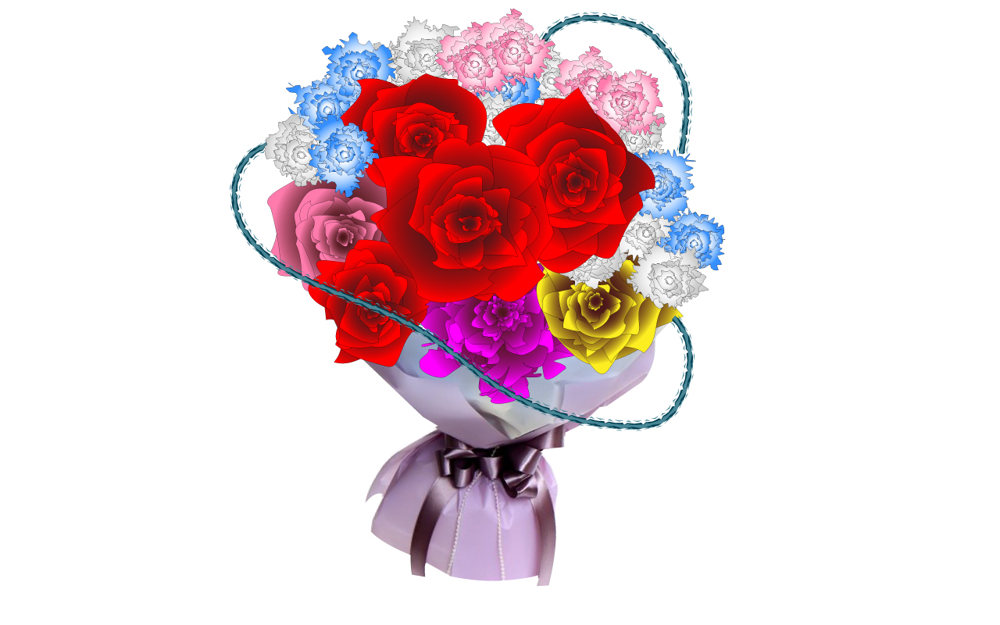
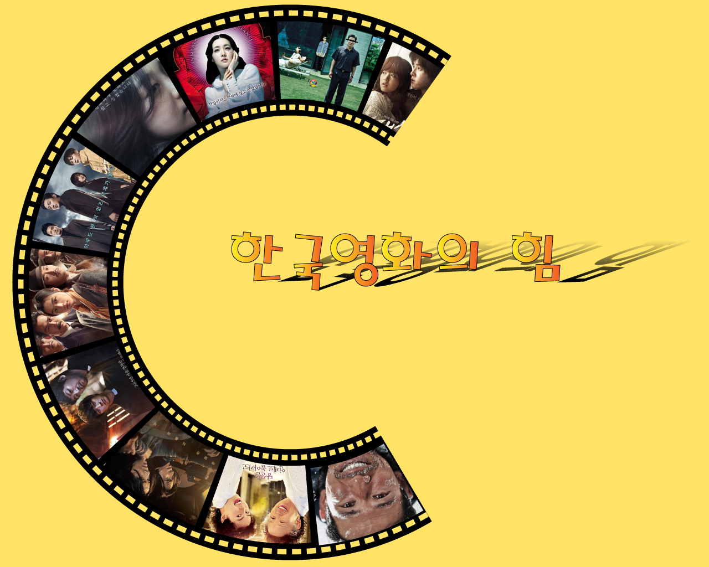
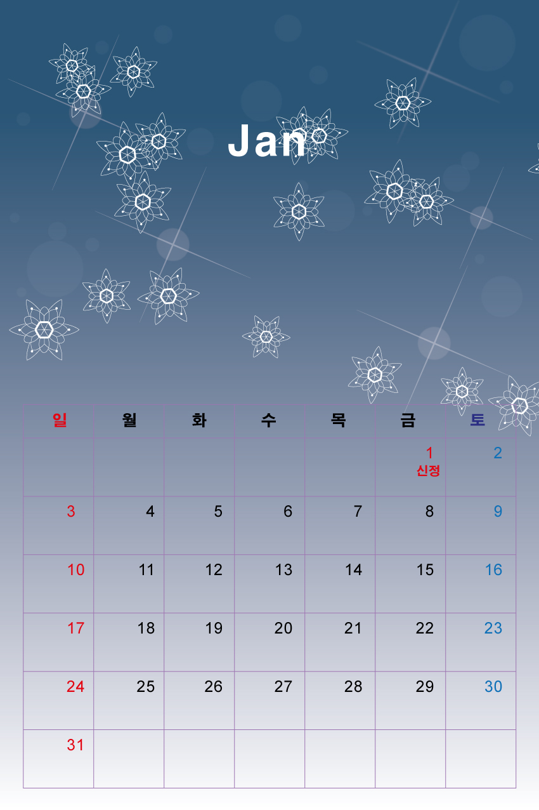
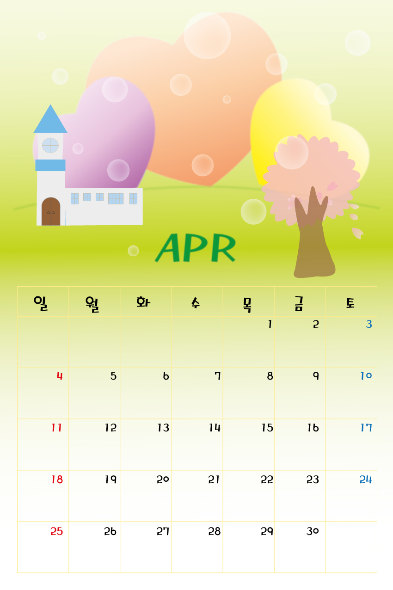
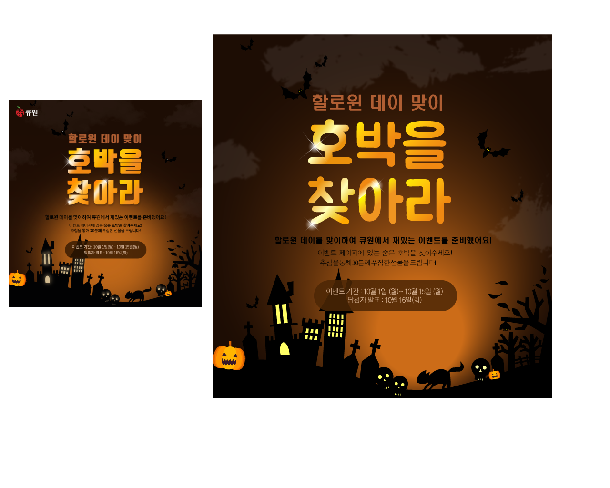
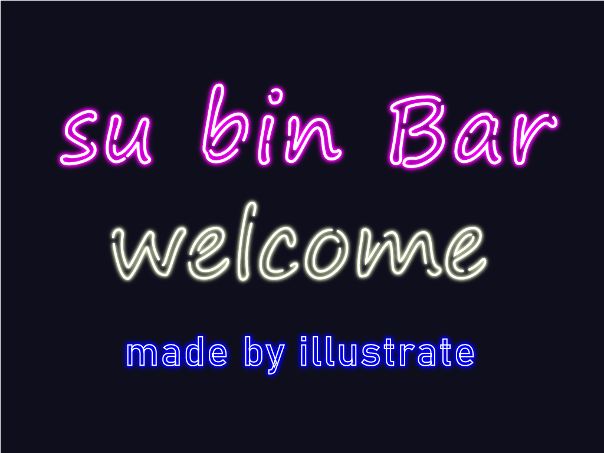
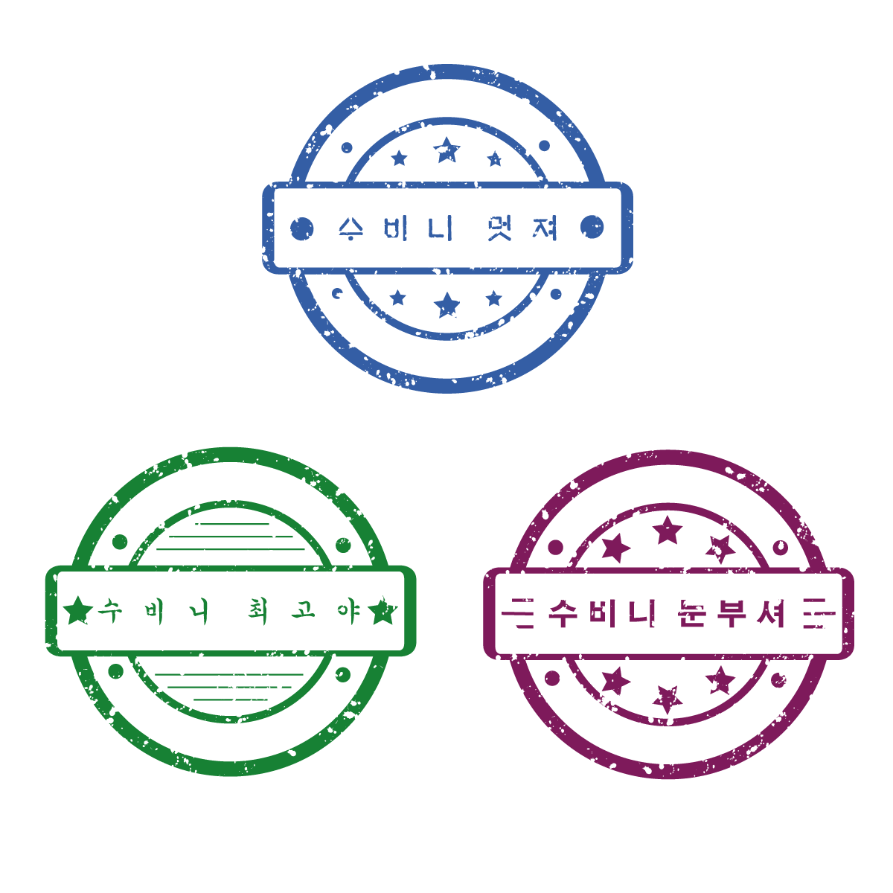

-

Skills used - Effect내 여러 효과사용
제작의도 - Effect > distort와 transform 을 이용하여
획일적이지 않고 자연스러운 다양한 꽃잎을 표현하려고 했으며,
브러쉬를 이용하여 아름다운 꽃에는 가시가 있다는 것을 표현함.
완성 소요시간 - 4시간
-

Skills used - Stroke & Free transform Toos 사용
제작의도 - Stroke의 다양한 효과를 이용하여
다양한 한국 영화를 홍보.
완성 소요시간 - 3시간
-

Skills used - Brushes Tool 사용
제작의도 - 눈꽃을 형상화해서 브러쉬로 등록하여
겨울을 표현함과 동시에 반짝임을 같이 넣어
눈꽃이 아름답게 흩날리는것을 표현함.
완성 소요시간 - 2시간
-

Skills used - Gradient Tool 사용
제작의도 - Gradient를 이용하여 따뜻한
봄 햇살이 충만한 자연을 표현함.
완성 소요시간 - 1시간
-

Skills used - Brushes & Clipping mask & pen Tool 사용
제작의도 - 큐원의 홍보 포스터 모작
완성 소요시간 - 5시간
-

Skills used - Effect 효과사용
제작의도 - Effect > Gaussian Blur 를 이용하여
네온사인의 빛 번짐을 표현함.
완성 소요시간 - 30분
-
Skills used - Brushes & Shape builder Tool 사용
제작의도 - 포토샵 작업에 필요한 낙관 제작.
완성 소요시간 - 20분
-

Skills used - Brushes & pathfinder 사용
제작의도 - Brushes > artistic 과 pathfinder를 이용하여
제작자의 기분 전환을 위한 작품완성.
완성 소요시간 - 40분